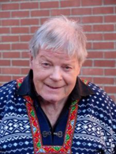

Ruth Müller
K, #36701, f. 25 juli 1903, d. 24 september 1950
Foreldre
Biografi
Ruth Müller ble født den 25 juli 1903 på/i Vist Nedre, Verdal, Nord-Trøndelag. Hun giftet seg med
Ragnvald A. Kvingedal den 3 juni 1927. Hun døde den 24 september 1950. Hun ble gravlagt den 30 september 1950 på/i Stiklestad kirkegård, Verdal, Nord-Trøndelag.
Ruth Müller had reference number 12031.
| Sist redigert |
16 februar 2023 00:23:42 |
| Slektskap | 7-menning 2 ganger forskjøvet til Håkon Wahl |
Ragnvald A. Kvingedal
M, #36702, f. 23 juni 1896, d. 30 september 1962
Foreldre
Biografi
Ragnvald A. Kvingedal ble født den 23 juni 1896 på/i Masfjorden, Hordaland. Han giftet seg med
Ruth Müller den 3 juni 1927. Han døde den 30 september 1962 på/i Oslo. Han ble gravlagt den 15 mai 1963 på/i Vår Frelses gravlund, Oslo.
Ragnvald A. Kvingedal had reference number 12032.
| Sist redigert |
16 februar 2023 00:20:05 |
Per Martin Muller
M, #36703, f. 4 mai 1905, d. 7 januar 1963
Foreldre
Biografi
Per Martin Muller ble født den 4 mai 1905 på/i Vist Nedre, Verdal, Nord-Trøndelag. Han døde den 7 januar 1963. Han ble gravlagt den 12 januar 1963 på/i Stiklestad kirkegård, Verdal, Nord-Trøndelag.
Per Martin Muller had reference number 12033.
| Sist redigert |
16 februar 2023 00:25:37 |
| Slektskap | 7-menning 2 ganger forskjøvet til Håkon Wahl |
Elisabeth Kristianne Muller
K, #36704, f. 6 august 1913, d. 27 september 2003
Foreldre
Biografi
Elisabeth Kristianne Muller ble født den 6 august 1913 på/i Vist Nedre, Verdal, Nord-Trøndelag. Hun giftet seg med
Åsmund Harald Ronglan. Hun døde den 27 september 2003. Hun ble gravlagt den 3 oktober 2003 på/i Stiklestad kirkegård, Verdal, Nord-Trøndelag.
Elisabeth Kristianne Muller was also known as Elisabeth Kristianne Ronglan. Hun had reference number 12034.
| Sist redigert |
16 februar 2023 00:37:53 |
| Slektskap | 7-menning 2 ganger forskjøvet til Håkon Wahl |
Peder Strand Rygh Muller
M, #36705, f. 29 september 1880, d. 25 juli 1885
Foreldre
Biografi
Peder Strand Rygh Muller ble født den 29 september 1880 på/i Vist Nedre, Verdal, Nord-Trøndelag. Han døde den 25 juli 1885 på/i Vist Nedre, Verdal, Nord-Trøndelag.
Peder Strand Rygh Muller had reference number 12035.
| Sist redigert |
7 september 2025 09:28:17 |
| Slektskap | 6-menning 3 ganger forskjøvet til Håkon Wahl |
Rebekka Marie Muller
K, #36706, f. 18 april 1883, d. 16 mars 1884
Foreldre
Biografi
Rebekka Marie Muller ble født den 18 april 1883 på/i Vist Nedre, Verdal, Nord-Trøndelag. Hun døde den 16 mars 1884 på/i Vist Nedre, Verdal, Nord-Trøndelag.
Rebekka Marie Muller had reference number 12036.
| Sist redigert |
7 september 2025 09:28:54 |
| Slektskap | 6-menning 3 ganger forskjøvet til Håkon Wahl |
Kristiane Muller
K, #36707, f. 3 mai 1885, d. 17 februar 1958
Foreldre
Biografi
Kristiane Muller ble født den 3 mai 1885 på/i Vist Nedre, Verdal, Nord-Trøndelag. Hun giftet seg med
Alfred Olaf Swensen den 4 september 1906. Hun døde den 17 februar 1958. Hun ble gravlagt den 3 august 1958 på/i Ringsaker gravsted, Ringsaker, Hedmark.
Kristiane Muller had reference number 12037.
| Sist redigert |
7 september 2025 09:33:07 |
| Slektskap | 6-menning 3 ganger forskjøvet til Håkon Wahl |
Alfred Olaf Swensen
M, #36708, f. 20 juli 1872, d. 22 juli 1949
Foreldre
Biografi
Alfred Olaf Swensen ble født den 20 juli 1872 på/i Aadalen, Buskerud. Han giftet seg med
Kristiane Muller den 4 september 1906. Han døde den 22 juli 1949. Han ble gravlagt den 28 mai 1950 på/i Ringsaker gravsted, Ringsaker, Hedmark.
Alfred Olaf Swensen had reference number 12038. Han ble konfirmert den 8 mai 1887 på/i Kristiania. Han ble i 1919 kommunelege Ringsaker, Hedmark., Kristianes helbred tålte ikke klimaet i Verdal.
| Sist redigert |
7 september 2025 09:48:14 |
Eva Swensen
K, #36709, f. 25 desember 1907, d. 21 januar 1997
Foreldre
Biografi
Eva Swensen ble født den 25 desember 1907 på/i Verdal, Nord-Trøndelag. Hun døde den 21 januar 1997. Hun ble gravlagt den 18 juli 1997 på/i Ringsaker gravsted, Ringsaker, Hedmark.
Eva Swensen had reference number 12039. Hun var student i 1925. Hun var utdannet ved biblioteker mellom 1928 og 1929 på/i London University, London, England.
| Sist redigert |
11 november 2025 23:29:29 |
| Slektskap | 7-menning 2 ganger forskjøvet til Håkon Wahl |
Gunvor Swensen
K, #36710, f. 5 august 1909, d. 23 september 2008
Foreldre
Biografi
Gunvor Swensen ble født den 5 august 1909 på/i Verdal, Nord-Trøndelag. Hun giftet seg med
Kristofer Glestad den 14 oktober 1933. Hun døde den 23 september 2008 på/i Ringsaker, Hedmark. Hun ble gravlagt den 20 november 2008 på/i Ringsaker gravsted, Ringsaker, Hedmark.
Gunvor Swensen had reference number 12040. Hun var student i 1928. Hun var utdannet i 1929 på/i Berby Havebruksskole, Idd, Østfold. Hun var utdannet i 1930 på/i Statens Husmorskole i Bærum.
| Sist redigert |
29 mars 2023 17:17:58 |
| Slektskap | 7-menning 2 ganger forskjøvet til Håkon Wahl |
Kristofer Glestad
M, #36711, f. 25 desember 1906, d. 6 september 1978
Foreldre
Biografi
Kristofer Glestad ble født den 25 desember 1906 på/i Ringsaker, Hedmark. Han giftet seg med
Gunvor Swensen den 14 oktober 1933. Han døde den 6 september 1978 på/i Ringsaker, Hedmark. Han ble gravlagt den 7 oktober 1978 på/i Ringsaker gravsted, Ringsaker, Hedmark.
Kristofer Glestad had reference number 12041. Han ble døpt den 17 mars 1907 på/i Ringsaker, Hedmark.
| Sist redigert |
26 mai 2023 13:01:27 |
Dagny Swensen
K, #36712, f. 16 september 1910, d. 24 august 1995
Foreldre
Biografi
Dagny Swensen ble født den 16 september 1910 på/i Verdal, Nord-Trøndelag. Hun døde den 24 august 1995. Hun ble gravlagt den 28 september 1995 på/i Ringsaker gravsted, Ringsaker, Hedmark.
Dagny Swensen hadde middelskole. Hun var utdannet ved i musikk, 2 år. Hun var utdannet ved utdannelse innen blomster og forretning. Hun had reference number 12042.
| Sist redigert |
26 mai 2023 12:40:53 |
| Slektskap | 7-menning 2 ganger forskjøvet til Håkon Wahl |
Per David Swensen
M, #36713, f. 14 juni 1912, d. 26 februar 1984
Foreldre
Biografi
Per David Swensen ble født den 14 juni 1912 på/i Verdal, Nord-Trøndelag. Han giftet seg med
Else Glestad. Han døde den 26 februar 1984. Han ble gravlagt den 20 juni 1984 på/i Ringsaker gravsted, Ringsaker, Hedmark.
Per David Swensen var utdannet ved tannlege på/i Tyskland. Han had reference number 12043.
| Sist redigert |
15 oktober 2023 00:42:54 |
| Slektskap | 7-menning 2 ganger forskjøvet til Håkon Wahl |
Inger Swensen
K, #36714, f. 20 juni 1915, d. 15 april 1996
Foreldre
Biografi
Inger Swensen ble født den 20 juni 1915 på/i Verdal, Nord-Trøndelag. Hun døde den 15 april 1996. Hun ble gravlagt den 9 juli 1996 på/i Ringsaker gravsted, Ringsaker, Hedmark.
Inger Swensen had reference number 12044. Hun var utdannet ved student i 1934.
| Sist redigert |
26 mai 2023 12:38:42 |
| Slektskap | 7-menning 2 ganger forskjøvet til Håkon Wahl |
Karl Rygh Swensen
M, #36715, f. 15 april 1918, d. 18 april 1995
Foreldre
Biografi
Karl Rygh Swensen ble født den 15 april 1918 på/i Verdal, Nord-Trøndelag. Han døde den 18 april 1995. Han ble gravlagt den 9 juni 1995 på/i Ringsaker gravsted, Ringsaker, Hedmark.
Karl Rygh Swensen had reference number 12045.
| Sist redigert |
26 mai 2023 12:43:47 |
| Slektskap | 7-menning 2 ganger forskjøvet til Håkon Wahl |
Oluf Rygh Müller
M, #36716, f. 20 mai 1891, d. 30 oktober 1956
Foreldre
Biografi
Oluf Rygh Müller ble født den 20 mai 1891 på/i Vist Nedre, Verdal, Nord-Trøndelag. Han giftet seg med
Johanne Elisabeth Skålerud den 7 august 1918. Han døde den 30 oktober 1956 på/i Trondheim, Sør-Trøndelag. Han ble gravlagt den 3 juni 1957 på/i Tilfredshet kirkegård, Øya; Elgeseter, Trondheim, Sør-Trøndelag.
Oluf Rygh Müller had reference number 12046. Han var utdannet i 1910 på/i Trondhjems Kathedralskole. Han var utdannet ved filologisk embedseksamen i 1918.
Ved Læreraksjonen under krigen ble Oluf arrestrert den 6. mars 1942 og satt først i Ørland leir og fra 20. april på Falstad Leir frem til han ble løslatt 24. april.
| Sist redigert |
7 september 2025 10:08:23 |
| Slektskap | 6-menning 3 ganger forskjøvet til Håkon Wahl |
Johanne Elisabeth Skålerud
K, #36717, f. 4 desember 1890, d. 17 september 1988
Biografi
Johanne Elisabeth Skålerud ble født den 4 desember 1890. Hun giftet seg med
Oluf Rygh Müller den 7 august 1918. Hun døde den 17 september 1988 på/i Trondheim, Sør-Trøndelag. Hun ble gravlagt den 11 oktober 1988 på/i Tilfredshet kirkegård, Øya; Elgeseter, Trondheim, Sør-Trøndelag.
Johanne Elisabeth Skålerud was also known as Johanne Elisabeth Müller. Hun had reference number 12047.
| Sist redigert |
7 september 2025 10:09:45 |
Else-Margrethe Müller
K, #36718, f. 10 februar 1921, d. 16 februar 2002
Foreldre
Biografi
Else-Margrethe Müller ble født den 10 februar 1921 på/i Trondheim, Sør-Trøndelag. Hun døde den 16 februar 2002 på/i Trondheim, Sør-Trøndelag. Hun ble gravlagt den 21 mai 2002 på/i Tilfredshet kirkegård, Øya; Elgeseter, Trondheim, Sør-Trøndelag.
Else-Margrethe Müller had reference number 12048.
| Sist redigert |
7 september 2025 10:12:55 |
| Slektskap | 7-menning 2 ganger forskjøvet til Håkon Wahl |
Liv Müller
K, #36719, f. 3 januar 1923, d. 24 januar 2008
Foreldre
Biografi
Liv Müller ble født den 3 januar 1923 på/i Trondheim, Sør-Trøndelag. Hun døde den 24 januar 2008 på/i Trondheim, Sør-Trøndelag. Hun ble gravlagt den 5 mars 2008 på/i Moholt kirkegård, Trondheim, Sør-Trøndelag.
Liv Müller was also known as Liv Dolmen. Hun had reference number 12049.
| Sist redigert |
7 september 2025 10:19:08 |
| Slektskap | 7-menning 2 ganger forskjøvet til Håkon Wahl |
Dagfin Müller
M, #36720, f. 18 april 1924, d. 6 november 2018
Foreldre

Dagfinn Müller
Biografi
Dagfin Müller ble født den 18 april 1924 på/i Trondheim, Sør-Trøndelag. Han døde den 6 november 2018 på/i Trondheim, Sør-Trøndelag. Han ble gravlagt den 16 juni 2021 på/i Stavne kirkegård, Trondheim, Sør-Trøndelag.
Dagfin Müller had reference number 12050. Han ble døpt den 29 juni 1924 på/i Trondheim, Sør-Trøndelag.
MÜLLER, Olav (Dagfinn) SS,CC
Han ble opptatt i den katolske kirke den 31. desember 1944 i Marie Bebådelse, Stockholm, Sverige, av pater Vanneufville, O.P.
Trådte inn i den tyske provins av picpusordenen (SS.CC.) i Simpelveld, og avla de første løfter den 7. oktober 1949. Subdiakonatsvigsel den 2. august 1953 ved biskop Johannes Rüth SS.CC. Diakonatsvigsel i Simpelveld den 5. september 1953 ved biskop Guglielmus Lemmens. Presteviet i Trondheim den 5. september 1954 ved biskop Rüth. Fullførte de teologiske studier i Simpelveld i Nederland våren 1955.
Kapellan i Burgbrohl og i Nieder-Oberweiler i Tyskland fra september 1955 til mars 1957. Beordret til Norge av generalsuperior Johannes d'Elbe den 13. mars 1957. Ankom Trondheim den 1. april 1957.
1. april 1957 1. mai 1965
Kapellan iSt. Olav, Trondheim
1. mai 1965 11. mai 1967
Sogneprest i Trondheim
11. mai 1967 29. november 1967
Sogneprest i Vår Frue, Ålesund
29. november 1967 2. juni 1968
Sogneprest i St. Eystein, Kristiansund N
2. juni 1968 31. august 1987
Sogneprest i Trondheim
1. september 1987 1. september 1988
Sogneprest i St. Laurentius, Drammen
9. september 1988 1. juni 1998
Sogneprest i Kristiansund N
1. juni 1998 4. februar 2003
Pensjonert, bosatt i SS.CC.-leilighet i Trondheim
4. februar 2003 4. juni 2009
Bosatt i SS.CC-kommunitet i Kristiansand
4. juni 2009
Pensjonert, bosatt i SS.CC.-leilighet i Trondheim
12. september 2010
Utnevnt til æresmedlem i Norges Unge Katolikker.
| Sist redigert |
7 september 2025 12:40:10 |
| Slektskap | 7-menning 2 ganger forskjøvet til Håkon Wahl |
Carl Fredrik Bentsen
M, #36721, f. 17 juli 1777, d. 24 juli 1838
Foreldre
Biografi
Carl Fredrik Bentsen ble født den 17 juli 1777 på/i Ussinggaard, Danmark. Han giftet seg med
Eva Clara Schøller. Han døde den 24 juli 1838 på/i Verdal, Nord-Trøndelag.
Carl Fredrik Bentsen was also known as Jørgen Ditlef Kjerulf. Han ble døpt den 24 oktober 1777 på/i Kolding, Danmark. Han ble konfirmert i 1790 på/i Ringgive, Danmark. Han bodde i 1807 på/i Trondheim, Sør-Trøndelag. This is a excerpt from a letter I received from my second cousin back in 1987. She lives or lived in Sakshaug, Norway. It is in regards to Carl F. Bentsen:
CFB’s is a sad story in Norway and how he lost his job as lensmann in Verdal (from an account by Rygh [ Per?])
Early springtime 1814 he got the job. As a start he had to pay the former lensmann 6000 Rd, incl gifts to the authorities (or their wives). This was usual at the time. But CFB had no money and had to borrow the 6000. He also farmed northern Lyng, belonging to the church…..and he was not clever at farming. Three years he was, perhaps, a happy man, popular and cultured. He bought many books and had paintings done of himself and Eva Clara.
His income was small and many farmers were poor and could not pay their debts. He could not pay his debts and took to drinking, involved himself with bad company and couldn’t do his job properly. His case was brought to law court and he lost his job in August 1818. All his belongings were auctioned away and his family had to leave Lyne for Vinne.
CFB didn’t appeal his sentence, he was sick and depressed, but the case went to over-court wanting more information about his personalia, and a vicar-certificate and his acknowledge of the conviction. On Dec 18 there was an extracourt. CFB had a nice certificate from the vicar that he didn’t drink any more, and told about himself just what he wanted them to know and that his name was Carl F. Bentsen, that he was 40 yrs old, born at Ussinggaard in Jylland. He sais his father was a tenant farmer named Bent Christiansen and his mother was Maren Blok. He said his father died 28 yrs ago and his mother 2 yrs ago. He said his father had farmed at Raestrup, near Vejle, Jylland and when he was 14 yrs old he left home and went to his uncle Petter Fredrich Deichmann and stayed there until 1798 or 1799 when he left to become a sailor after about 8 yrs. He then came to Trondhjem in 1807.
He has not told the court the truth nor a lie, but he has juggled a bit with names so as to explain his own name. And his explanation of the missing 8 yrs are rather thin. Sure he had some military “career” when he came to Norway. Sometime after he lodt his job, he went back to the army as a lower officer. That paid badly and so he had many small jobs, writing letters, an accountant for smaller companies. Then he built Bentsengard in Verdalsora, where he and Eva Clara lived and died, and where Paul Rasmus and his family lived after..
The worst with the case for him personally was that they found deficiency in his business and that was the most important in the case against him.
| Sist redigert |
21 august 2022 10:30:35 |
Eva Clara Schøller
K, #36722, f. 23 mai 1784, d. 15 desember 1851
Foreldre
Biografi
Eva Clara Schøller ble født den 23 mai 1784 på/i Trondheim, Sør-Trøndelag. Hun giftet seg med
Carl Fredrik Bentsen. Hun døde den 15 desember 1851 på/i Verdal, Nord-Trøndelag.
Eva Clara Schøller was also known as Eva Clara Scholler.
| Sist redigert |
17 november 2009 00:00:00 |
Zefanias Fredriksen Moe
M, #36723, f. 1861, d. 5 september 1925
Biografi
Zefanias Fredriksen Moe ble født i 1861. Han giftet seg med
Karen Martha Olsdatter Vivan. Han døde den 5 september 1925 på/i Nonstad, Åsen, Levanger, Nord-Trøndelag.
| Sist redigert |
27 mai 2019 00:00:00 |
Karen Martha Olsdatter Vivan
K, #36724, f. 1866, d. 1907
Biografi
Karen Martha Olsdatter Vivan ble født i 1866 på/i Skogn, Levanger, Nord-Trøndelag. Hun giftet seg med
Zefanias Fredriksen Moe. Hun døde i 1907 på/i Nonstad, Åsen, Levanger, Nord-Trøndelag.
| Sist redigert |
27 mai 2019 00:00:00 |
Andreas Bastesen Kvingedal
M, #36725, f. 1842
Biografi
| Sist redigert |
15 april 2009 00:00:00 |
{kind=link}